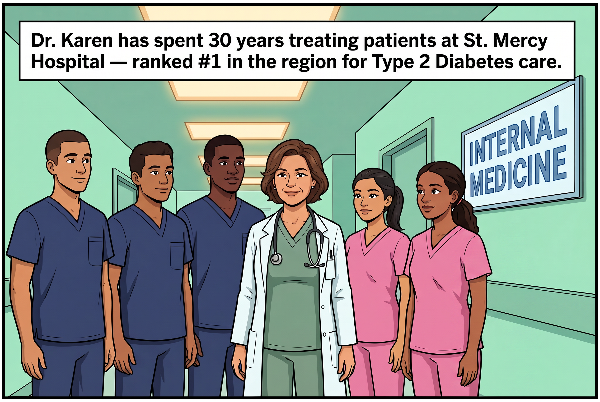
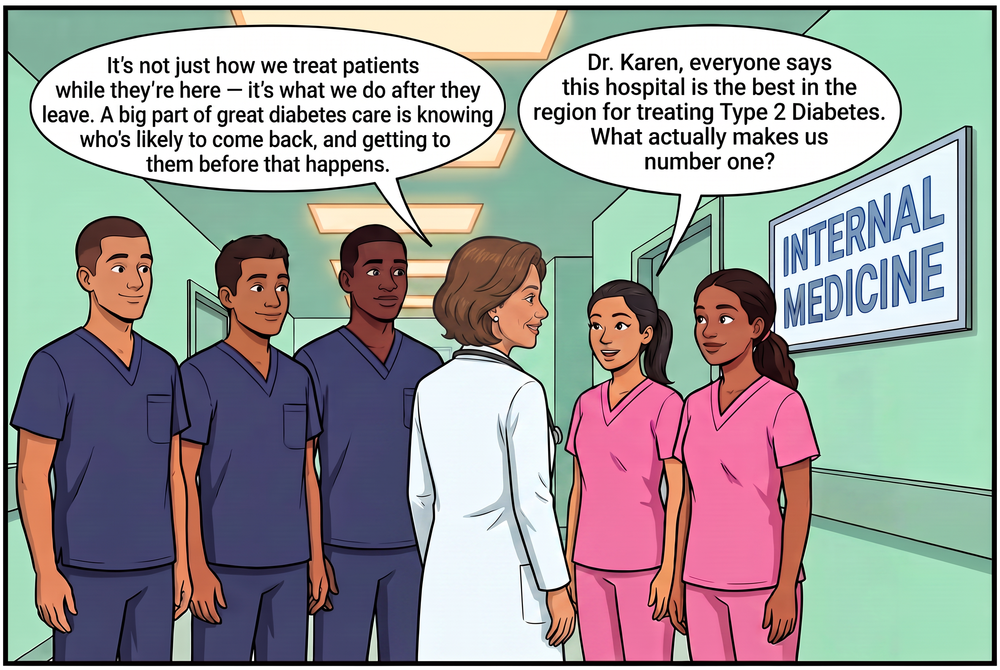
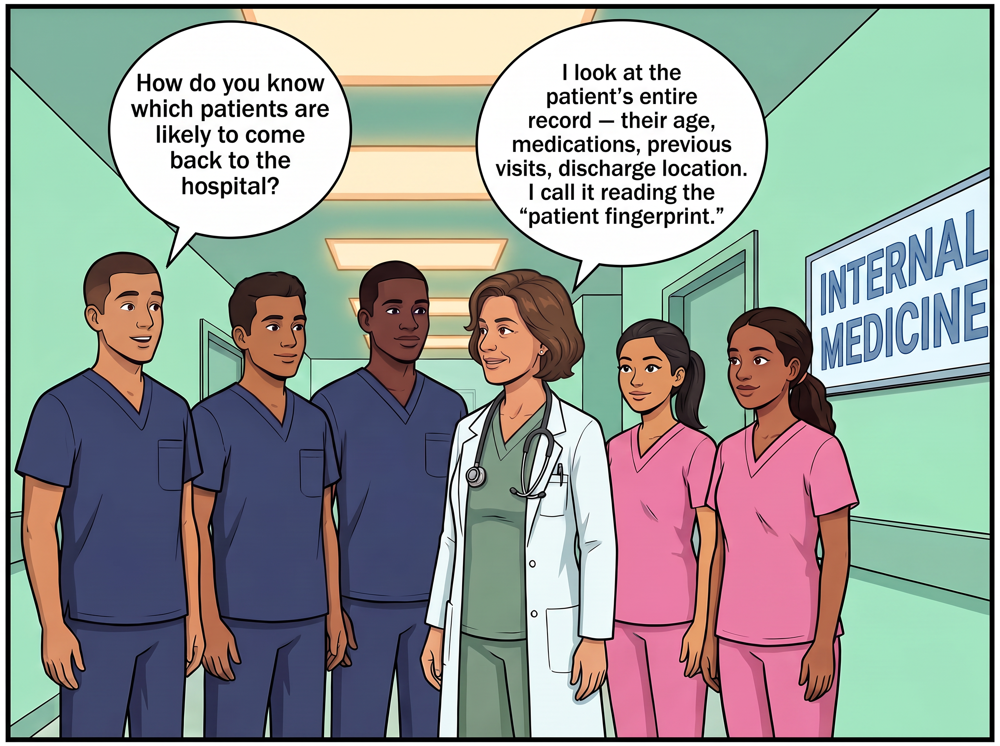
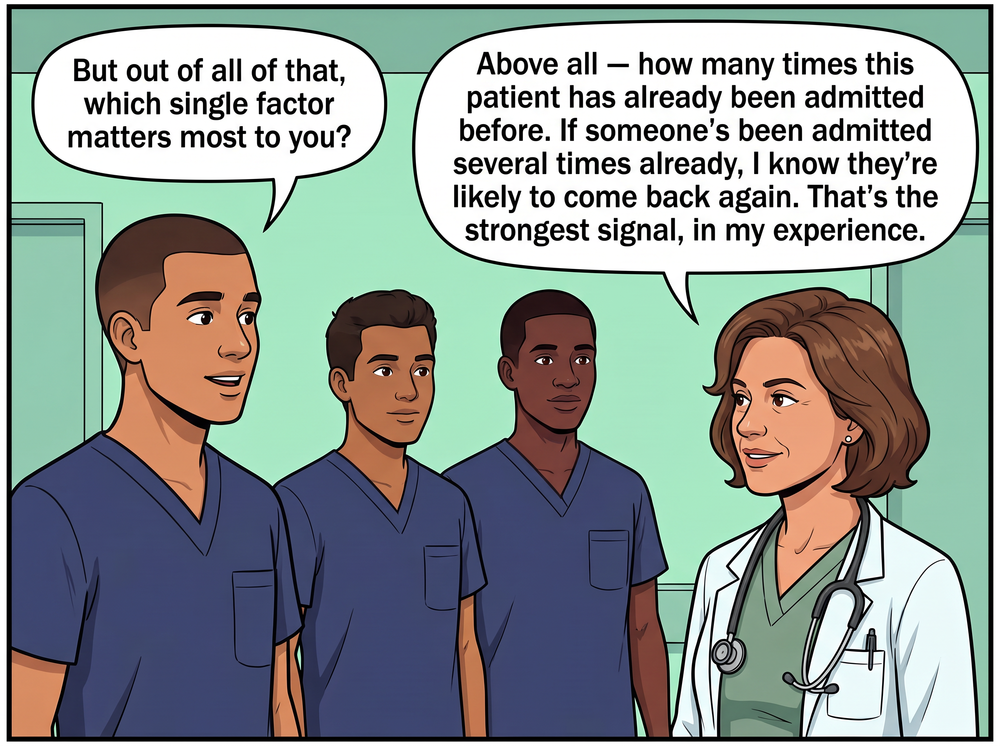
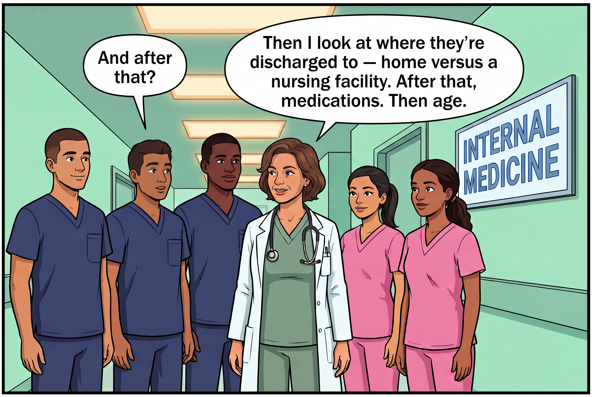
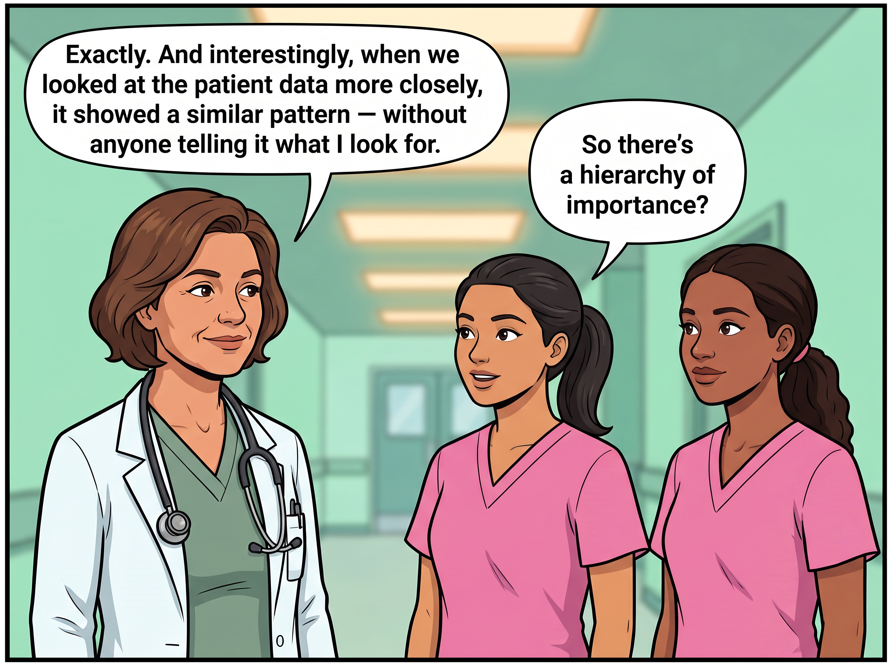
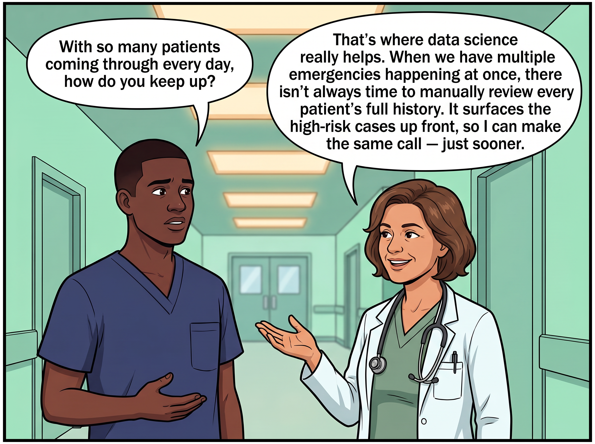
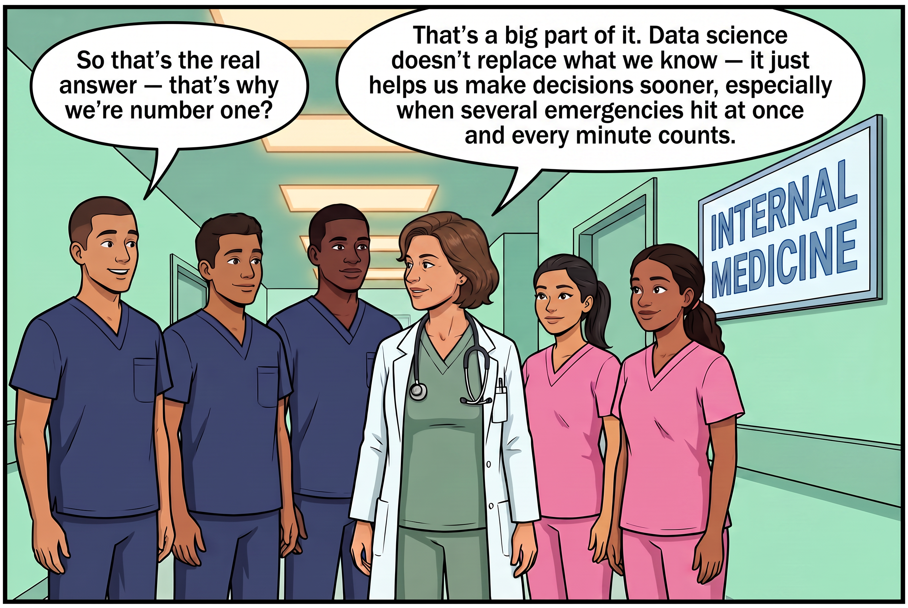

Data Analysis · Healthcare
101,766 hospital encounters, 130 U.S. hospitals, one question: which patients are most likely to come back within 30 days — and can that be predicted early enough to act on?
00 · The idea, first
Before any dataset, model, or chart — here's the core idea behind this whole project, told as a conversation. "Feature importance" is really just what an experienced doctor already does by instinct.








The rest of this page shows exactly how that intuition gets tested, measured, and turned into an actual model — starting with the manual process below.
01 · Before data science
Before any model gets involved, here's how a diabetic patient's hospital stay actually flows — entirely on clinical judgment, with no automated risk score anywhere in the loop.
This is the baseline the project measures itself against: no systematic risk flagging, no proactive follow-up scheduling, and discharge decisions made purely on clinical judgment. The predictive model built later in this project is meant to sit inside this same flow — not replace it.
How data science helps — in this same process
Three points (marked in pink above) where a predictive model plugs in — not replacing any step, just adding a signal at moments that already exist.
1. At registration — prior visit history and admission type are already known the moment a patient is admitted. A model can compute an initial risk score right here, before any test results come in.
2. At physician assessment — instead of every patient being reviewed in arrival order, flagged high-risk patients get looked at first.
3. At the discharge decision — this is where it matters most. Today this call is made on judgment alone. A risk score here means high-risk patients get extra follow-up scheduled before they leave, not after they've already come back.
What this could realistically deliver
Caveat: these benefits are conditional, not guaranteed — they depend on the model being deployed correctly. As covered in Section 08 · Limitations, this is currently a proof-of-concept, not a validated clinical tool. The benefits above are real, but only once the remaining gaps (patient-level leakage, expired-patient contamination) are addressed.
02 · Intake
Before any model gets built, here's what's actually in the data — and where it can't be fully trusted.
101,766
Hospital encounters
71,518
Unique patients
130
Hospitals
1999–2008
Years covered
50
Fields recorded
Race, gender, age band, weight
Type, discharge disposition, source, length of stay
Prior visits, procedures, medication count, diagnoses
ICD-9 codes, later grouped into clinical categories
Glucose serum test, A1C blood sugar control
One column per diabetes drug — steady, up, down, none
Readmitted — no, after 30 days, within 30 days
03 · Quality check
What needs to be known before trusting any number downstream — every analysis in this project accounts for these.
Repeat encounters mean a patient can appear in both a training set and a test set unless the data is split by patient, not by row — a leakage risk addressed later in the modeling section.
04 · Transparency
Before any pattern gets shown or any model gets trained, here's what was deliberately left out — and why. Three different reasons, not one.
Two other high-missingness columns — payer_code (40% missing) and medical_specialty (49% missing) — were not dropped. They were kept and their missing values labeled "Unknown," since that absence can itself be informative rather than just noise.
On the fairness exclusion: removing race and gender from the model means neither variable can directly drive a prediction — but this is a partial safeguard, not a complete one. Other fields (discharge disposition, admission source) can act as indirect proxies for demographic patterns. Race and gender are still shown in the exploratory analysis below, deliberately, because the disparities in the raw data are worth seeing — they're just not used to make the model's decisions.
05 · Exploration
Five views into the data, ordered by how much they actually explain — the two biggest risk signals first, context second, a null result last.
11.2%
30-day readmit rate
4.4 days
avg. length of stay
39.8%
readmit rate, 6+ prior visits
27.7%
readmit rate, rehab discharge
Prior inpatient visits → readmission risk
the single strongest signal in the data — risk nearly 5× from 0 to 6+ prior visits
Discharge disposition → readmission risk
where a patient goes next predicts almost as strongly as their history does
Readmission outcome
the target this whole project predicts
Length of stay
heavily right-skewed, most stays are short
A null result worth noting
A1C blood sugar control test
Normal: 9.7% readmit · >7: 10.0% · >8: 9.9%
Practically flat. A clinically important test turns out to carry almost no predictive signal on its own — matching its very low feature importance in the model built later.
The two hero charts explain why the predictive model leans so heavily on utilization history and discharge destination — not point-in-time lab results like A1C.
06 · Inference
Before any variable earns a place in the predictive model, it has to prove it isn't just noise. Race and gender are excluded from this step too — see the data ethics section above.
Not every question can be answered the same way — the right test depends on what kind of thing is being compared. If both things are categories (like age group and whether someone was readmitted), a chi-square test asks whether the groups look meaningfully different, or if the pattern could be chance. If one thing is a category and the other is an actual number (like length of stay in days), a t-test compares the average between the two groups instead. Once individual variables pass this screening, the ones that matter get combined into one logistic regression model — because in real patients, several factors act together, not in isolation.
Decision logic — by variable type
This is the general rule, before any specific data gets involved.
Applied to this dataset
The same rule, now with the actual variables tested here.
For the length-of-stay test, X and Y flip relative to the other two rows — the question here is "what was the average stay among readmitted patients," not "does stay length predict readmission." Same test, reversed framing.
Chi-square test
Χ² = Σ (O−E)² / E
O = observed count, E = expected count if no relationship existed
T-test (Welch's)
t = (x̄₁ − x̄₂) / √(s²₁/n₁ + s²₂/n₂)
compares the average of a number between two groups
Age — what it means clinically
Age is a proxy for slower recovery, more comorbidities, and less support at home. Elderly patients need thorough discharge planning, not just medical clearance.
Diabetes meds — what it means clinically
Medication management quality after discharge genuinely affects outcomes. Discharge counseling on proper use isn't a formality — it measurably matters.
Length of stay — what it means clinically
A longer-than-expected stay is itself an early warning sign — a signal for extra discharge attention, not just a scheduling detail.
No single factor is enough on its own to flag a patient — age, medication history, and stay length only become a useful risk picture once combined. That combination is what the predictive model does next.
07 · Prediction
Statistical tests confirm that individual factors matter. This is where they get combined into one number per patient — an actual, usable risk score, not just a group-level association.
Why this matters for this dataset specifically: knowing "age is statistically associated with readmission" doesn't tell a care team what to do with the patient in front of them right now. A predictive model turns dozens of individual signals into a single risk score for one specific person — which is what actually makes a screening tool usable.
How does the model actually learn this — is it told what's medically important?
No. Nothing is told to the model about which factors are clinically important. It only works because every patient in this dataset is historical — the actual outcome (readmitted or not) is already known. The model compares patients with a given trait against patients without it, and checks whether their real outcomes actually differed.
Analogy: imagine being handed 1,000 old exam sheets, each with the student's answers and their final grade already written on it. If students who got Question 5 right tended to have higher grades, you'd notice that pattern yourself — nobody had to tell you Question 5 mattered. The model does the same thing with patient data, using statistics instead of eyeballing it.
This is also why a clinically important test like A1C ended up with a small weight — the model checked, and its statistical relationship with readmission was weak in this data, regardless of its medical significance. The model only learns statistical patterns, not clinical seriousness.
Why predictive modeling, on this dataset
Statistical tests (previous section) stop at "does this factor matter." This is the step that turns that into something usable.
Why these three models, specifically
Each one exists to answer a different question about this dataset — run in order of increasing complexity.
What this means for the final decision: running all three isn't redundant — it's what lets this project claim XGBoost is the right choice with evidence, not just picked because it's popular. Because XGBoost won on both AUC (0.672) and recall (58.0%) — the metric that matters most for catching real readmissions — it becomes the model recommended for actual screening use. Logistic Regression stays valuable as the explainable fallback when a clinician needs to see the reasoning in plain weights, not just a score.
The three models, in full
Same 189 input features each time — the general concept behind each model, then how it actually performed on this data.
1. Logistic Regression
The concept: fit one smooth S-shaped curve that converts any combination of inputs into a probability between 0 and 1 — no matter how extreme the inputs, the output can never leave that range.
P = 1 / (1 + e−(β₀+β₁x₁+...+βₙxₙ))
On this dataset: class_weight='balanced' (only 11.2% of patients are readmitted, so the minority class gets extra weight) · same 189 features as the other two models.
Result: 65.5% accuracy · 0.645 AUC · 53.7% recall
Walking through one real patient
A simplified 5-feature version of the formula, applied to an actual patient from the dataset — small enough to follow by hand.
P = 1 / (1 + e−(−0.066 + 0.377z₁ + 0.094z₂ + 0.055z₃ + 0.059z₄ + 0.011z₅)) = 0.666
Model predicted a 66.6% chance of readmission for this patient — flagged high-risk. This patient was, in fact, readmitted within 30 days. The dominant driver was the 3 prior inpatient visits, which carried by far the largest weight.
2. Random Forest
The concept: grow many decision trees independently, each on a random slice of the data, then let them vote — a crowd of imperfect trees averages out to something more reliable than any single tree.
ŷ = mode { T₁(x), T₂(x), ..., T₂₀₀(x) }
Why chosen for this data: real patients don't follow straight lines — risk from age and prior visits together can compound beyond what Logistic Regression's fixed weights can capture. Random Forest catches these interactions, and averaging 200 trees resists overfitting to noise.
On this dataset: n_estimators=200 (number of trees) · max_depth=10 (caps how deep each tree can split, preventing memorization) · class_weight='balanced'.
Which features carry the most weight
Learned entirely from data during training — not assigned by hand.
3. XGBoost
The concept: build trees one at a time instead of all at once — each new tree looks specifically at what the previous trees got wrong, and nudges the prediction closer to the truth.
ŷ(t) = ŷ(t−1) + η·ft(x)
Why chosen for this data: unlike Random Forest's independent trees, XGBoost directly targets the patients the previous tree got wrong — it's the standard for tabular healthcare data and consistently the strongest performer here.
On this dataset: scale_pos_weight (XGBoost's equivalent of class balancing) · same 189 features.
Result: 66.0% accuracy · 0.672 AUC · 58.0% recall — best of the three
Confusion matrix — out of 100 patients
What XGBoost actually gets right and wrong, at the default 0.5 threshold.
60
correct
5
missed
29
false alarm
6
caught
Of 35 patients flagged "high risk," only 6 actually return — the honest trade-off of prioritizing recall over precision in a screening context.
The limitation worth stating plainly
A model can only learn patterns that already exist in its training data — it has no concept of "clinical seriousness," only "statistical pattern in past outcomes." A rare but genuinely dangerous condition with too few past examples may get underweighted, not because it doesn't matter medically, but because the model never saw enough of it to learn the pattern. This is the core difference between a doctor's judgment and a model's prediction.
So which model actually won?
XGBoost wins — not on raw accuracy (Random Forest edges it there), but on AUC and recall, the two metrics that matter most on imbalanced healthcare data like this. Missing a genuinely at-risk patient costs more than a false alarm, and recall is exactly what tracks that. Logistic Regression stays useful as the explainable fallback when a clinician needs to see the reasoning in plain weights.
Are these numbers stable, or just a lucky split?
5-fold cross-validation, run separately to check — full methodology in the Limitations section below.
Every model lands within 0.005 of its single-split result — the numbers above weren't a lucky split. Full cross-validation code and methodology are in Section 09 · Limitations.
08 · Honesty check
The gap between a portfolio-stage analysis and a clinically deployable tool — stated plainly rather than glossed over.
High severity — directly affects the reported numbers
Resolved during this project
Cross-validation was flagged as missing, then actually run — real numbers, not a caveat.
5-fold stratified cross-validation was run for all three models. Every cross-validated AUC lands within 0.004–0.005 of its single-split counterpart, with low variance (±0.005–0.006) — confirming the original results reflect genuine model performance, not a lucky train/test split. XGBoost remains the strongest model on both AUC and recall (57.2% ± 1.2%) even under cross-validation.
Medium severity — affects how far the results generalize
Bottom line: this is a genuine proof-of-concept, not a production-ready or clinically validated tool. Cross-validation has now been verified — that's no longer an open question. The two remaining priorities before any further claims would be excluding expired/hospice patients and re-validating with a patient-level, not row-level, split. Used correctly, this model is a screening aid that helps a care team decide who to look at first — not a diagnostic tool that makes the call on its own.